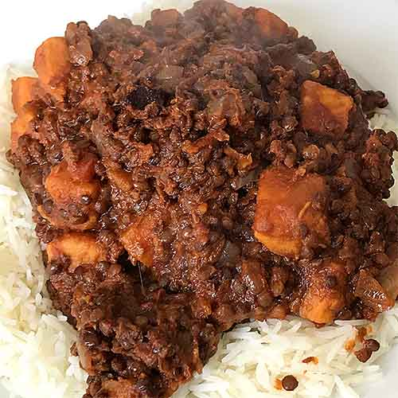

Beluga lentil curry

Beluga lentils? Sweet potato? Lime? Why not? A delicious dal.
Ingredients
Serves 4 (or 2, if those people are me!)
Difficulty: Easy
- 1 onion
- 2 gloves garlic
- 1cm piece of fresh ginger
- 1 carrot
- 1.5 tablespoons Thai red curry page (although I put the whole jar in!)
- 300g beluga lentils
- 1 tin chopped tomatoes
- 1 tin coconut milk
- 500ml vegetable stock
- 1 sweet potato
- Coriander powder
- 1 lime
- Ground black pepper
Method
- Peel and chop the onion, garlic, ginger and carrot.
- Heat the oil and sauté the onion, garlic, carrot and ginger for a couple of minutes or so.
- Add the curry paste, stir well and continue sautéing for a minute or two.
- Add the tomatoes, coconut milk and vegetable stock.
- Briefly bring to the boil and then simmer gently for 20 minutes, stirring occasionally.
- While you're doing that, peel the sweet potato, chop into cubes and add it to the pan.
- Press the lime and add its juice to the pan, along with the coriander powder and ground pepper.
- Serve with basmati rice and/or Indian breads such as roti, naan etc.
Home